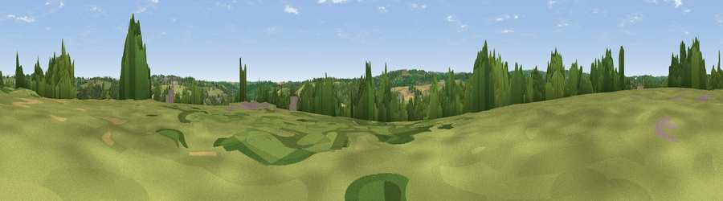

Viewpoint near Perranwell
#36497 in England · top 75% of its area beats it · near PerranwellThe view, rendered

A 360° render of this exact spot computed from the terrain model, tree cover and land cover — summer colours, afternoon light, calibrated against photographs of famous viewpoints. Real trees, hedges and buildings will differ in detail.
The panorama
Grey silhouette: terrain skyline in each direction (720 bearings, Earth curvature and refraction included). Dashed green: skyline with trees (+15 m) and buildings (+8 m) as obstacles. Blue strip: how far the ground is visible on each bearing.
Where the view opens
Wedge length = distance to the farthest visible ground on that bearing (vegetation-aware). Rings at 10, 25 and 50 km.
What fills the view
50% grassland · 31% woodland · 14% cropland · 4% built-up ·
Angular shares of the visible panorama (visual magnitude), not map area. Landscape diversity 0.50 (0–1 Shannon).
Key numbers
More beautiful places nearby
The staircase of upgrades: each row has a higher view potential than everything closer. Driving times are estimates from straight-line distance, calibrated against real road routing — check an actual route before setting out.
| Place | Direction | Drive | Score |
|---|---|---|---|
| Pellynwartha Hill | SW · 2 km | ~5 min | 37.7 |
| Viewpoint near Mylor Bridge | SE · 5 km | ~11 min | 50.9 |
| Viewpoint near Tremough | SSW · 5 km | ~11 min | 62.3 |
| Viewpoint near Lanner | W · 6 km | ~12 min | 74.5 |
| Carn Brea | W · 9 km | ~18 min | 81.1 |
| St Agnes Beacon | NW · 12 km | ~22 min | 86.1 |
| Viewpoint near Foxhole | NE · 24 km | ~40 min | 86.4 |
| Viewpoint near Stenalees | NE · 28 km | ~45 min | 88.0 |
50.21963, -5.12075 · source: screening · position refined by local search. Computed location — check access rights before visiting.